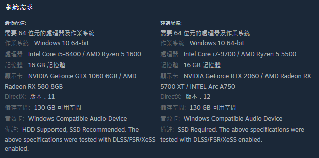
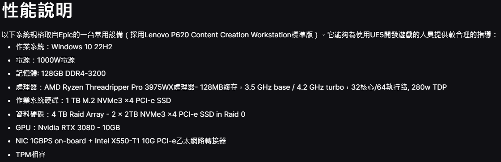
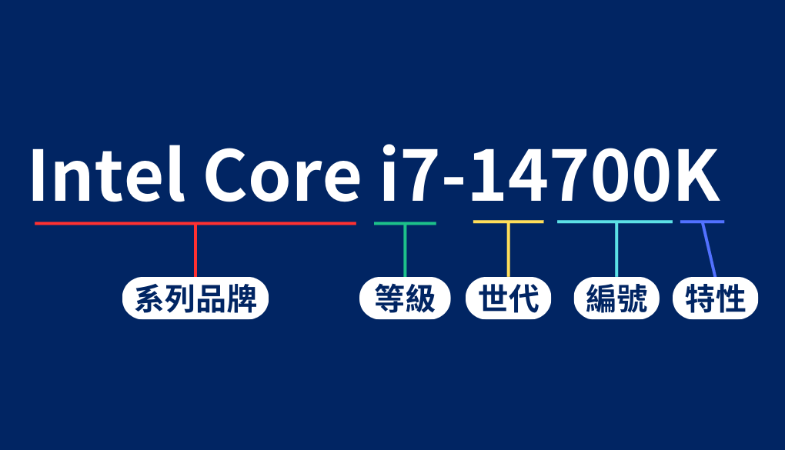
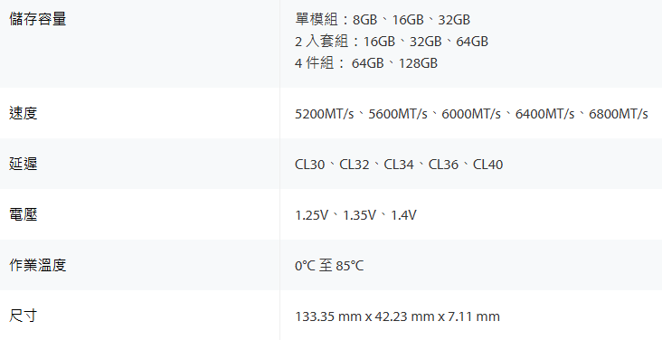
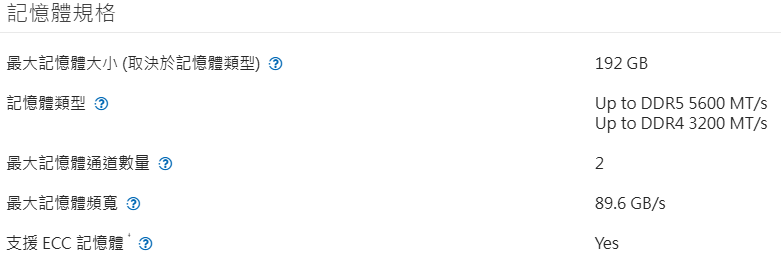
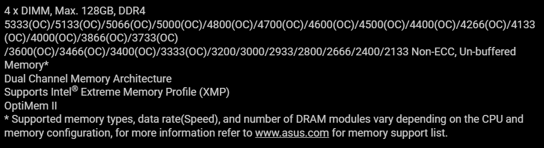

需求
配電腦非常簡單只要依照你的需求抓出想要的CPU及顯卡就好了這兩樣零件基本就決定這台電腦的性能也可以推斷出總體預算大概落在哪裡
下圖為"黑神話：悟空"系統需求

下圖為"Unreal Engine 5"系統需求

1.處理器 CPU
以Intel Core i7 14700K來說:

處理器的命名使用 i3、i5、i7 和 i9 來區分不同的性能等級，等級的數字愈大代表性能愈好，包括更多的核心數、更高的時脈速度、更大的快取容量，不過僅限於同一世代的比較。
| Core i3 |
入門，適合瀏覽網頁與一般的文書處理。 |
| Core i5 |
中階，適合遊玩輕度遊戲或追劇。 |
| Core i7 |
高階，適合專業應用、遊戲、影片編輯和其他高性能任務等。 |
| Core i9 |
頂級，適合多核心應用、AI 和深度學習、專業模擬與分析軟體和 3A 大作遊戲。
|
|
K：可超頻的處理器
|
|
F：無內建顯示卡
|
挑選要點：
1.品牌與平台：選擇 Intel 或 AMD。
Intel：適合高頻遊戲表現（如 Core i5、i7、i9）。
AMD：多核心更強，適合多工處理與工作站用途（如 Ryzen 5、7、9 或 Threadripper）。
2.用途：
遊戲：高單核性能為主。
生產力（剪輯、建模、渲染）：多核心多執行緒性能更重要。
3.相容性：
確保主板的插槽（Socket）與 CPU 匹配（如 LGA 1700 for Intel 13th Gen，AM5 for Ryzen 7000）。
4.散熱要求：
預算內置散熱器通常足夠。
高性能 CPU（如 Ryzen 9、Intel i9）需要搭配高效散熱器（水冷或塔式空冷）。
2.顯示卡 GPU
挑選要點：
1.性能需求：以遊戲解析度與設定為準。
1080p 遊戲：中階卡（如 NVIDIA RTX 4060 / AMD RX 7600）。
1440p 高特效：中高階卡（如 NVIDIA RTX 4070 / AMD RX 7700 XT）。
4K 遊戲或內容創作：高階卡（如 NVIDIA RTX 4080 / AMD RX 7900 XTX）。
2.顯存（VRAM）：
遊戲建議至少 8GB。
高分辨率與專業應用建議 12GB 以上（如 RTX 4080）。
3.散熱與尺寸：顯卡較長，需確認能安裝於機殼內，並考量散熱效果與風道。
4.供電需求：檢查顯卡 TDP，確保電源供應器有足夠瓦數與 8-pin / 16-pin 接頭。
3.主機板 Motherboard
挑選要點：
相容性：
1.處理器插槽（Socket）：
Intel：如 LGA 1700（12/13 代）、LGA 1200（10/11 代）。
AMD：如 AM5（Ryzen 7000 系列）、AM4（Ryzen 3000-5000 系列）。
2.晶片組（Chipset）：
Intel：Z790、B760（高階、中階）或 H610（入門）。
AMD：X670、B650（高階、中階）或 A620（入門）。
3.記憶體支援：
DDR4 或 DDR5，確認 RAM 類型和頻率。
4.PCIe 插槽：遊戲與多媒體創作建議支援 PCIe 4.0 或 PCIe 5.0（顯卡、SSD 更快）。
確認顯卡插槽為 x16 且有足夠空間避免干涉。
5.RAM 插槽數量：多數主板有 2 或 4 個 RAM 插槽，最高支援容量視主板而定（通常 64GB 或 128GB）。
6.M.2 插槽數量：支援 NVMe SSD 的數量越多越好，建議至少有 2 個。
8.SATA 接口數量（通常 4~6 個），方便連接 HDD 和 SATA SSD。
9.M.2 插槽是否支援 PCIe 和 SATA。
10.USB 接口：
支援 USB 3.2 Gen 2 或 USB-C 提供更高傳輸速度。
11.網路支援：
有線：1Gbps 或 2.5Gbps LAN，更高階有 10Gbps。
無線：支援 Wi-Fi 6 / 6E 提升無線性能。
12.音訊功能：
高階主板配備更好的音訊晶片（如 Realtek ALC1220）。
13.供電設計（VRM）：
高性能 CPU（如 Ryzen 9、Intel i9）需要主板有強大的供電設計，避免瓶頸。
具備散熱片的 VRM 設計有助於穩定性。
14.尺寸（Form Factor）：
ATX：標準大小，適合大多數桌機配置。
Micro-ATX：較小巧，適合空間有限的機殼。
Mini-ITX：最小型，適合迷你機殼但擴展性受限。
15.品牌與保固：
推薦品牌包括 ASUS、MSI、Gigabyte、ASRock。
選擇有良好 BIOS 支援與更新的品牌。
4.記憶體 RAM
RAM中文全名為「隨機存取記憶體」
RAM 主要是作為一個「工作區域」，以存儲運行應用程式和操作系統的臨時數據。當您遊玩遊戲或是觀看串流影片時，相關的資訊會被暫時存儲於 RAM 中，以便 CPU 可以迅速存取。一旦應用程式關閉，RAM
會立即清空，為下一個任務做好準備。
決定RAM性能的因素有:
以Kingston FURY™ Beast DDR5 RGB為例

以Intel Core i7 14700K及ASUS TUF GAMING Z790-PLUS D4為例

| 1.最大記憶體大小為192GB如果裝超出192GB會使電腦出現各種問題 |
| 2.記憶體類型DDR5最大頻率為5600MT/s DDR4最大頻率為3200MT/s |

| 1.4xDIMM:4個DIMM插槽 |
| 2.Max.128GB為最大記憶體大小 |
| 3.DDR4 5333MT/s(OC)為最大速度，最小為2133MT/s |
挑選要點：
1.容量：
基本使用：16GB（2x8GB）。
遊戲或輕創作：32GB（2x16GB）。
專業用途：64GB 或以上（視需求）
2.主流選擇：DDR4 3200-3600 MHz 或 DDR5 4800-6000 MHz（視主板支援）。
高頻率對部分應用（如遊戲）有提升，但需兼顧延遲（CL 值）。
3.雙通道：優先選擇雙條（2x）配置，性能高於單條記憶體。
4.相容性：確認主板支援的 RAM 類型與最高頻率。
一些平台（如 AMD）可能需要 BIOS 更新以支援高頻 RAM。
5.硬碟 Storage Drives
|
成本 |
速度 |
耐用度 |
最高容量 |
能源效率 |
| HDD |
更便宜 |
更慢 |
較不耐用 |
10 TB |
更耗能 |
| SSD |
更昂貴 |
更快速 |
更耐用 |
4 TB |
耗能較低 |
挑選要點：HDD（硬碟）
1.容量：
基本需求：1TB 足以存放系統備份與日常檔案。
多媒體儲存：2TB 或更大容量（如 4TB、6TB）適合存放大量影片、照片或大型資料庫。
企業用途：選擇高容量（如 10TB 或以上）的伺服器級 HDD。
2.轉速（RPM）：
5400 RPM：較慢但安靜，適合低頻存取或冷資料存儲。
7200 RPM：更快的讀寫速度，適合遊戲與日常用途。
10000 RPM 或以上：適合專業應用（如 WD VelociRaptor），但價格較高。
3.快取（Cache）：常見快取為 64MB、128MB 或 256MB。快取越大，讀寫效能越好。
4.介面：
SATA（Serial ATA）：大多數 HDD 使用 SATA III 接口，傳輸速率達 6Gbps。
SAS（Serial Attached SCSI）：適合伺服器，性能與穩定性高但價格昂貴。
5.品牌與可靠性：
值得信賴的品牌包括 Western Digital（WD）、Seagate、Toshiba。
不同用途可選特定系列：
WD Blue / Seagate Barracuda：適合日常使用。
WD Black：高性能，適合遊戲與多媒體創作。
WD Red / Seagate IronWolf：專為 NAS 儲存系統設計。
WD Gold / Seagate Exos：伺服器級高可靠性。
6.耐用性與保修：
檢查 MTBF（平均故障時間）與 TBW（總寫入量）等參數。
企業級 HDD 通常提供更長保修期（5 年以上）。
挑選要點：SSD（固態硬碟）
1.介面類型：
SATA SSD：適合入門（如 Samsung 870 EVO）。
NVMe PCIe SSD：性能更快，適合遊戲與生產力（PCIe 3.0、4.0、甚至 5.0）。
2.容量：
系統與基本應用：256GB 至 500GB。
遊戲與大型文件：至少 1TB，部分高階使用建議 2TB。
3.性能參數：
讀取速度：影響開機與讀取時間（如 3500MB/s for PCIe 3.0）。
寫入速度：影響文件處理速度（如 5000MB/s for PCIe 4.0）。
耐用度（TBW）：確認保修與總寫入量（TBW）參數，耐用性更高的產品更適合長期使用。
4.散熱需求：高性能 NVMe SSD（如 PCIe 4.0 / 5.0）可能需要散熱片。
6.電源供應器 PSU
挑選要點：
1.瓦數計算：根據整機 TDP，選擇總功耗的 1.2 倍以上的電源。
入門：500-650W（適合 i5+中階 GPU）。
中高階：750-850W（適合 i7/i9+高階 GPU）。
高階與多顯卡：1000W 或以上。
2.效率等級：選擇 80 PLUS 認證（至少 Bronze，推薦 Gold 或 Platinum）。
模組化設計：
全模組化：可拆線材，方便理線與升級。
半模組化或非模組化：便宜但可能影響理線。
3.品牌與質量：選擇有口碑的品牌（如 Seasonic、FSP、DELTA）。